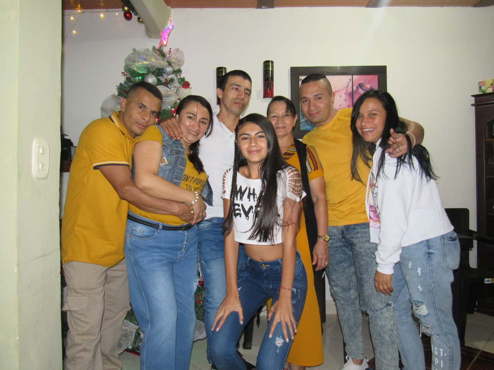

Nombre:
Paola andrea mira Orozco
Numero de cedula:
1005207265
Fecha de nacimiento:
11/02/2003
Teléfono:
3192169576
Ciudad:
Colombia
E-mail:
andreamira-10@outlook.comsoy Paola Andrea Mira Orozco interesada en la tecnología, tengo planes como graduarme y continuar en una carrera de
ingeniero de software. Estoy estudiando ADSI en el Sena comercio y turismo.
Todo empezó en el colegio fundadores, cuando los grados de 9 pasan a 10 escogen una modalidad en que seguir,
son 3 que son:
ingles
software
electrónica
Y como a mí no me gustaba electrónica y menos ingles entonces escogí software y me gusto y decidí seguir en eso y salir a delante como una programadora.
Vivo en Montenegro, con mi familia que son: mi mama, mi hermana, y mis sobrinos, y mis mascotas que son 2 gatos y 2 perros. este es mi vínculo familiar
lo que más me gusta es cuando llega diciembre porque todos estamos reunidos, toda mi familia y celebramos todos unidos y ya después nos vamos acampar en el rio de la vieja son unas pequeñas vacaciones nos quedamos 8 días o hasta que se nos acaba la comida :( .
Bueno soy andrea, tengo 18 años, vivo en Colombia, soy estudiante en el Sena, me gustan mucho los animales más los gatos, siempre he querido conocer una jirafa y no se me ha dado el privilegio porque cuando voy al zoológico no hay jirafas. Me gusta la natación mucho el agua; yo iba a practicar natación aquí en Montenegro y era gratis hasta que empezaron a comprar y solo fui como 3 clases y ya no volví porque no había plata, pero lo que más me gustaba era cuando nos daban tiempo de descanso había que disfrutar la piscina ajajaja. eso era lo que hacía en mi tiempo libre ahora es estar acostada o salir en veces en cuando y no faltan las tareas para hacerlas en el tiempo libre jajaj. soy divertida, alegre, y me gustan mucho los pases en amigos. Cuando tenga mis cosas me gustaría tener una finca con piscina, un carro, y una moto. Por el momento no quiero.
Mi comida favorita es: los frijoles, las lentejas, y el arroz con huevo que es lo que más como.
tengo novio, el tiene 19 años trabaja en una fabrica de construcion con los hermanos, nos conocimos el 07/07/2019 asi que vamos para los 2 años y feliz de estar con el.